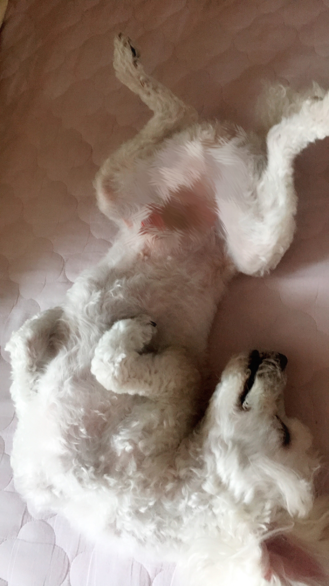

Choi Sarang is a lovely dog living as a member of a family over ten years. He came to our home when I was in middle school, promising my parents that I would never play computer games if they allow me to raise a puppy.

As a matter of fact that many dogs has passed through my home but none of them could make it to live longer than two years. They were all sent to other houses. Sarang, however, were doing quite well not only as a dog but also as a house keeper so that he successed in surviving.
Sarang is also very intelligent. When I was in middle school, I had a chance to play 'Nintendogs' from which I learned how to train a dog. I trained him to put his hand on my hand first. I made him lie flat, bring what I threw, etc. This kind of training was the biggest difference that Sarang had compared to other dogs. My family became able to 'communicate' with him by ordering him to do certain behaviors.
Now Sarang is about 11 years old. This is quite an old age for dogs. For a decade he has been a essential part of our family's life. It is almost impossible to imagine a life without him.